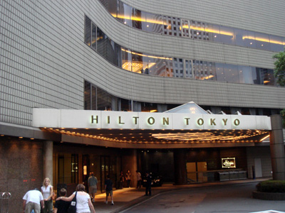
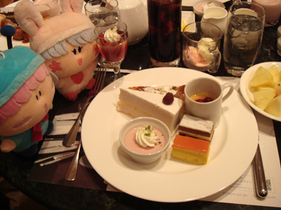
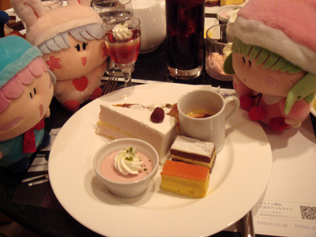
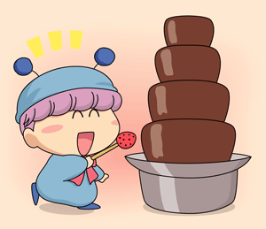

2007年8月18日（土） 14:45～
2007年夏、ぴろこさんより素敵な企画を提案していただきました。新宿西口のヒルトンホテル内にあるお店「チェッカーズ」にて行われているサマーデザートフェア、すなわちスイーツ食べ放題にチャレンジしようという企画、題して『妖精なりきりツアー』です♪（コスプレをするわけではないですよ^^;） ぴろこさん、multalさん、そして私のいつもの３人で早速お店へと向かいました。

ヒルトンホテルの入口
お店はバイキング形式になっていて、いろんな種類のケーキやムースといったスイーツ、フルーツやアイスクリームがあちこちに並べられています。この時間のためにお腹を空かせてきた私は、いろんなスイーツをお皿に盛りつけました。ぴろこさんとmultalさんもいろんなスイーツを手にしていて、気がつけば３人それぞれ個人プレイに走っていました。

パピィ「あたちはあのチョコケーキを食べるわよ」
ムルモ「ボクはヨーグルトムースをいただくでしゅ！」

リルム「食後にわたくしの手作りパフェもいかがですか？」
パピィ「リ、リルムたん！？」
ムルモ「お兄たまにプレゼントしてくだしゃいでしゅ」
リルム「まぁ、ご遠慮なさらなくてもよいのですわ」
テーブルにこれだけのスイーツが乗ると爽快です。お味の方は甘さ控えめでとても美味しく、甘い物が苦手な私でも普通に全部食べられました。甘いお菓子をわいわいおしゃべりしながら食べるのって楽しいですね。妖精の気持ちに少し近づけたような気がしました。
全部食べた後はおかわりを取りに再びスイーツバーへ。しかし持ってきたのはスイーツではなく、パスタやサンドイッチといった軽食類だったり…。まだまだ妖精になりきるには経験値が必要のようです。
 さて今回心残りがひとつありまして、それはスイーツバーにあったチョコレートファウンテンの写真を撮り忘れたこと。絵のようにイチゴやパイナップルをチョコレートの泉に漬けてチョコまみれにさせることが出来るという、まさに妖精ちっくなアイテムなのですが、、、これの撮影のために近々スイーツバーにもう一度チャレンジする予定です。（次回へ続く）
(2007/8/24)